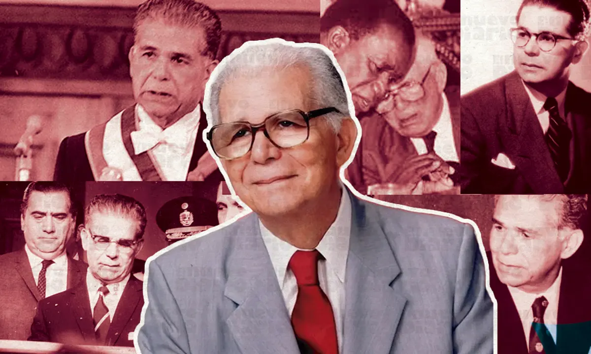

Balaguer reciprocó ese respeto hacia Trujillo durante los treinta años de dictadura como uno de los colaboradores más eficientes del régimen, igual que otros múltiples destacados profesionales, sin parecer perturbado ni mostrar el menor gesto de disgusto por los excesos y aberraciones que eran comunes en aquella época. Balaguer fue, sin duda, un ministro útil de Trujillo, sabiendo cualquier negativa al tirano le podía costar la vida.
Joaquín Balaguer murió de insuficiencia cardíaca en Santo Domingo el 14 de julio de 2002 a la edad de 96 años.

¿Qué aprendimos hoy ?

© Desarrollado por: Crismely Victoriano Delgado #22